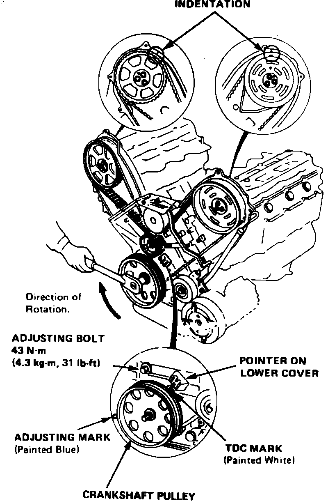
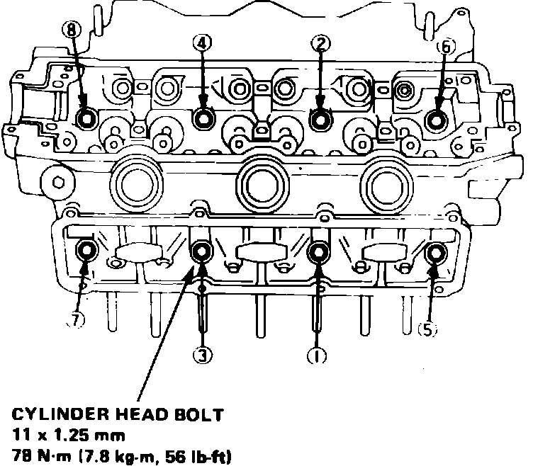

Cylinder Head Assembly: Service and Repair
Fig. 1 Relieving fuel system pressure:

1. Disconnect battery ground cable, drain cooling system, then position No. 1 cylinder at TDC compression stroke.
2. Disconnect brake booster vacuum tube from intake manifold.
3. Remove engine secondary ground cable from cylinder head and transaxle housing.
4. Disconnect radio condenser electrical connector, ignition coil wire and ignition primary connector.
5. Remove air cleaner cover.
6. Relieve fuel system pressure by loosening the service bolt on top of fuel filter, Fig. 1, one complete revolution, then disconnect fuel lines from filter.
7. Disconnect throttle cable from throttle body and the charcoal canister hose from throttle valve.
8. Disconnect engine sub-harness connectors and couplers from cylinder head and intake manifold.
9. Disconnect oxygen sensor electrical connector.
10. Disconnect upper radiator hose, heater inlet hose and bypass inlet hose from cylinder head.
11. Remove coolant hose between intake manifold and water passage.
12. Disconnect connecting pipe to valve body hose and bypass outlet hose.
13. Disconnect ignition wires from spark plugs, then remove distributor assembly.
14. Remove intake manifold cover, wire harness cover and alternator pulley cover.
15. Remove alternator and alternator drive belt.
16. Remove power steering pump and disconnect pump hoses.
17. On models equipped with A/C, disconnect idle control solenoid hoses.
18. On models equipped with cruise control, remove cruise control actuator.
19. On all models, remove exhaust pipe header nuts, then disconnect header pipes from manifolds.
20. Remove air cleaner case attaching bolts, then disconnect hose between intake manifold and breather chamber.
21. Remove air cleaner case from intake manifold.
22. Remove EGR tube nuts from cylinder head, then the exhaust manifold cover nuts.
23. Remove air suction tube nuts from exhaust manifold and air suction valve.
24. Remove intake manifold from cylinder head.
25. Remove water passage assembly from front and rear cylinder heads.
26. Remove timing belt upper covers, then loosen tension bolt and remove timing belt. Advance crankshaft approximately 15° prior to removing timing belt to prevent interference between valve and piston. Do not bend or crimp timing belt more than 90° or to less than 1 inch in diameter.
27. Position cam so that no valve is fully open, then remove front and rear pulley attaching bolts and the pulleys. On the rear pulley, remove top two bolts first, then the remaining bolt.
28. Remove upper cover back plates, then the valve covers and head side covers.
Fig. 11 Bearing cap & camshaft removal:

29. Remove bearing cap pipes, bearing caps and camshafts, Fig. 11.
30. Remove intake and exhaust inside rocker arms and push rods.
31. Remove cylinder head attaching bolts and the cylinder head. Loosen cylinder head attaching bolts 1/3 turn one at a time until all bolts are loose, to prevent warpage.
32. Reverse procedure to install, noting the following:
a. Clean cylinder head and engine block mating surfaces prior to installation.
Fig. 12 Timing gear marks. Legend:

b. Install cylinder head with cylinder No. 1 at TDC position of compression stroke and timing marks aligned as shown, Fig. 12.
c. Install cylinder head using a new gasket, ensuring dowel pins and oil control jet are properly aligned with cutouts in gaskets.
d. Torque exhaust manifold nuts to specifications in a criss-cross pattern in two or three steps, beginning with the inner nuts.
Fig. 13 Cylinder head bolt torque sequence. Legend:

e. Torque cylinder head attaching bolts in two steps; first to 29 ft. lbs., then to 56 ft. lbs. in sequence, Fig. 13.